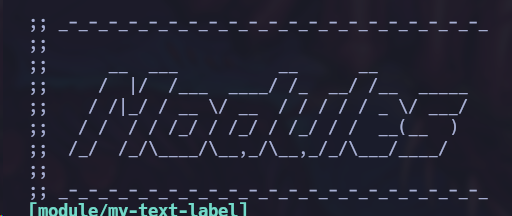
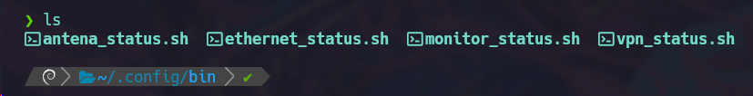

Un día, por curiosidad, decidí tomar el curso de personalización de Linux de S4vitar. Principalmente, quería entender cómo funciona la personalización en esta tecnología. Realizar este ejercicio me ayudó a comprender aún más las jerarquías y dependencias de Linux.
Llegué a una parte del curso en la que se estaban agregando banners a la polybar del sistema. Sin embargo, al eliminar algunas cosas en las que no estaba interesado, noté que quedaba espacio libre en el lado derecho de la barra. Empecé a reflexionar sobre cómo podría aprovechar ese espacio.
En aquel momento, estaba practicando varios ataques a dispositivos WiFi, lo que significaba que necesitaba usar regularmente dos interfaces de red. Debía deshabilitarlas y habilitarlas o cambiarlas del modo managed a monitor.
El problema era que me resultaba bastante tedioso ejecutar el comando iwconfig cada cierto tiempo para realizar estas consultas. Entonces, se me ocurrió la idea de crear un banner que mostrara esta información cada vez que lo necesitara
Creación de los módulos requeridos
Paso 1:
El primer paso que yo ejecuté fue crear el o los módulos de la polybar desde el archivo de configuración ~/.config/polybar/current.ini:
[bar/antena_bar]
inherit = bar/main
width = 10%
height = 40
offset-x = 86%
offset-y = 15
background = ${color.bg}
foreground = ${color.white}
bottom = false
padding = 1
;padding-top = 2
module-margin-left = 0
module-margin-right = 0
;modules-left = date sep mpd
modules-center = antena_status
wm-restack = bspwm
[bar/monitor_bar]
inherit = bar/main
width = 10%
height = 40
offset-x = 75.7%
offset-y = 15
background = ${color.bg}
foreground = ${color.white}
bottom = false
padding = 1
;padding-top = 2
module-margin-left = 0
module-margin-right = 0
;modules-left = date sep mpd
modules-center = monitor_status
wm-restack = bspwm
Paso 2:
Ahora, en el mismo archivo ~/.config/polybar/current.ini, vamos a dirigirnos a la sección de "módulos" que se encuentra más abajo.
Una vez ahí escogeremos un espacio para finalizar con la configuración de los módulos, yo recomiendo el final para así tener todo lo personalizado de una forma más ordenada:
[module/antena_status]
type = custom/script
interval = 2
exec = ~/.config/bin/antena_status.sh
[module/monitor_status]
type = custom/script
interval = 2
exec = ~/.config/bin/monitor_status.sh
Reconocimiento de módulos
Ahora, debemos agregar las siguientes líneas al archivo ~/.config/polybar/launch.shv para que el módulo recién creado sea reconocido. Es importante observar que "cada línea corresponde a cada módulo", por lo que si solo colocó un módulo, solo debe agregar una línea específica con la ruta:
polybar antena_bar -c ~/.config/polybar/current.ini &
polybar monitor_bar -c ~/.config/polybar/current.ini &
Si solo agregaste un módulo, entonces solo necesitas agregar una línea similar a la anterior con la ruta del script correspondiente al módulo que creaste.
Nota: Debemos tener cuidado al verificar los nombres de los módulos para asegurarnos de que el programa encuentre la ruta correcta. Por ejemplo, si mi módulo se llama "Antena_bar", se especifica "Antena_bar" en la ruta.
Paso Final
Como paso final, una vez que hemos configurado todo, es hora de crear el script que se encargará de mostrar la información que deseamos.
Para ello, vamos a dirigirnos al directorio ~/.config/bin/ o al archivo en el que estés guardando tus binarios de configuración personalizada.
Como pueden observar, se deben crear los archivos de configuración exactamente con el mismo nombre de los módulos creados anteriormente y con la extensión .sh para indicar que es un archivo de script bash.
Una vez creados los archivos, procedemos a agregar el código. En este código, como podemos observar, no hice uso del comando iwconfig como sería lo habitual, sino que utilicé ifconfig. Esto se debe a que al brindarme información del estado de las interfaces de red, el comando iwconfig no me estaba proporcionando los datos correctos. Por lo tanto, tuve que utilizar ifconfig para obtener la información correcta y reflejarla en los módulos, que al fin y al cabo, es lo que se necesita.
C:\>
File: monitor_status.sh:
#!/bin/sh
IFACE=$(/usr/sbin/iwconfig wlan1 2>&1 | grep "No such device")
if [ -n "$IFACE" ]; then
echo "%{F#ff7c00} %{F#ffffff} Disconnected"
else
IFACE_MODE=$(/usr/sbin/iwconfig wlan1 | grep "Mode:" | awk '{print $1, $4}')
if [ "$IFACE_MODE" = "Mode:Managed Not-Associated" ]; then
echo "%{F#ff7c00} %{F#ffffff} Mode: Managed"
elif [ "$IFACE_MODE" = "wlan1 Mode:Monitor" ]; then
echo "%{F#ff7c00} %{F#ffffff} Mode: Monitor"
else
echo "%{F#ff7c00} %{F#ffffff} Disconnected"
fi
fi
C:\>
File: antena_status.sh:
#!/bin/sh
IFACE=$(/usr/sbin/iwconfig wlan0 2>&1 | grep "No such device")
if [ -n "$IFACE" ]; then
echo "%{F#ff0000} %{F#ffffff} Disconnected"
else
IFACE_MODE=$(/usr/sbin/iwconfig wlan0 | grep "Mode:" | awk '{print $1, $4}')
if [ "$IFACE_MODE" = "Mode:Managed Not-Associated" ]; then
echo "%{F#ff0000} %{F#ffffff} Mode: Managed"
elif [ "$IFACE_MODE" = "wlan0 Mode:Monitor" ]; then
echo "%{F#ff0000} %{F#ffffff} Mode: Monitor"
else
echo "%{F#ff0000} %{F#ffffff} Disconnected"
fi
fi